Workshops, mentoring and corporate training — taught by practising designers, assessed properly, certified at the end.
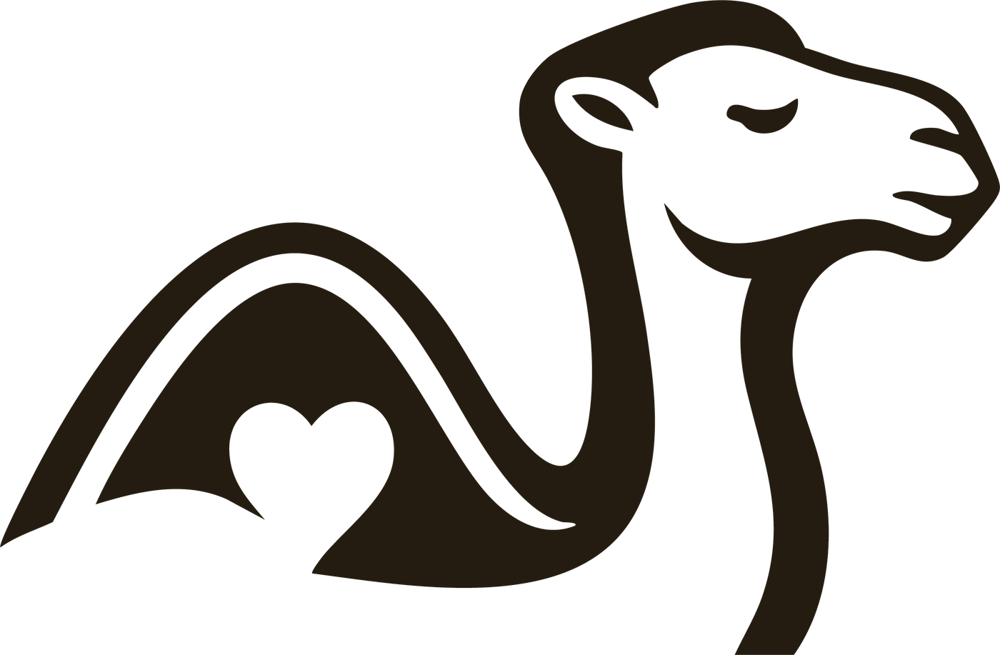
Hover a programme to see what it covers. Every track now includes AI — used as a working tool, and designed for as a material.
Design sprints and UX upskilling run against your own product backlog — not a generic case study.
| # | Topic | What we cover | Session |
|---|---|---|---|
| 01 | Problem framing & the brief | Turn a vague ask into a sharp, testable problem statement | Day 1 |
| 02 | Discovery research sprints | Plan and run user interviews inside a compressed timeline | Day 1 |
| 03 | Affinity mapping & synthesis | Cluster raw notes into patterns the whole team can see | Day 1 |
| 04 | ✦ AI AI-assisted research synthesis | Speed up clustering with AI, then check it against the transcripts | Day 1 |
| 05 | Journey mapping | Map the current experience and mark exactly where it breaks | Day 2 |
| 06 | Rapid prototyping | Paper to clickable in hours, at the fidelity the question needs | Day 2 |
| 07 | ✦ AI Designing AI features & guardrails | Probabilistic output, error states, consent and human oversight | Day 2 |
| 08 | Usability testing | Script, moderate and record sessions with your actual users | Day 2 |
| 09 | Design critique | Run a critique that improves the work instead of defending it | Day 3 |
| 10 | Stakeholder storytelling | Present findings so decision-makers actually act on them | Day 3 |
| 11 | Engineering handoff | Specs, tokens and the conversations that prevent rework | Day 3 |
| 12 | Measuring impact | Pick the metric that proves the design moved something | Day 3 |
Campus intensives and faculty development, with assessment and certificates for every participant.
| # | Topic | What we cover | Day |
|---|---|---|---|
| 01 | What is design? | Beyond aesthetics — design as a way of making decisions | Day 1 |
| 02 | Why UX matters | What good and bad experiences actually cost, with real examples | Day 1 |
| 03 | The design thinking process | Empathise, define, ideate, prototype, test — run end to end | Day 1 |
| 04 | User interviews | Writing the questions, then running your first real interview | Day 2 |
| 05 | Affinity mapping | Turning a wall of messy notes into themes you can act on | Day 2 |
| 06 | Wireframing & UI basics | Layout, hierarchy, spacing, type and colour | Day 3 |
| 07 | Figma fundamentals | Frames, components, auto-layout and sharing work | Day 3 |
| 08 | Prototyping | Linking screens into something people can actually try | Day 4 |
| 09 | ✦ AI Designing with AI tools | Exploring options faster — and spotting where AI misleads you | Day 4 |
| 10 | Usability testing | Watching someone use your work without stepping in to help | Day 4 |
| 11 | ✦ AI AI ethics & bias | Where AI gets it wrong, and who it tends to get wrong for | Day 5 |
| 12 | Portfolio & case study basics | Writing up what you did so it reads as thinking | Day 5 |
Portfolio mentoring and career guidance for designers starting out.
| # | Topic | What we cover | Week |
|---|---|---|---|
| 01 | Portfolio audit | An honest read of what's working and what's padding | Week 1 |
| 02 | Case study narrative | Problem, decisions, outcome — told as a story, not a list of steps | Week 2 |
| 03 | Showing impact & metrics | Making the result legible without inventing numbers | Week 3 |
| 04 | Visual craft & typography | The details that separate junior work from mid-level work | Week 4 |
| 05 | Interaction & motion basics | Timing, easing, and knowing when not to animate | Week 5 |
| 06 | Design systems | Components, tokens, and doing good work inside constraints | Week 6 |
| 07 | ✦ AI AI in your daily workflow | Where AI earns its place in your process — and where it doesn't | Week 7 |
| 08 | ✦ AI Prompting for designers | Getting usable output instead of generic output | Week 7 |
| 09 | Portfolio presentation | Rehearsing the walkthrough until it lands in twenty minutes | Week 8 |
| 10 | Design interviews | Whiteboard challenges, take-homes, and the questions behind them | Week 9 |
| 11 | Personal brand | A site, a profile and a point of view that reads as yours | Week 10 |
| 12 | Freelance & rates | Scoping, pricing, and saying no to the wrong brief | Week 11 |
Every participant fills in the same card before they leave the room — two scales, two open questions, handed back on the spot and never chased afterwards. These are the cards from a five-day UI/UX cohort, photographed as they came in.
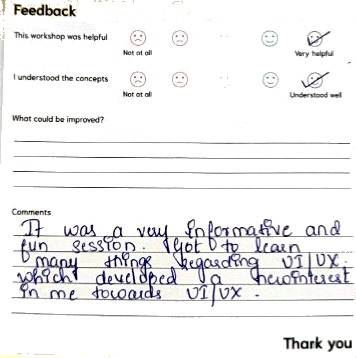
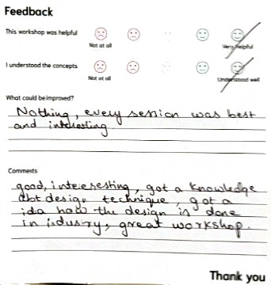
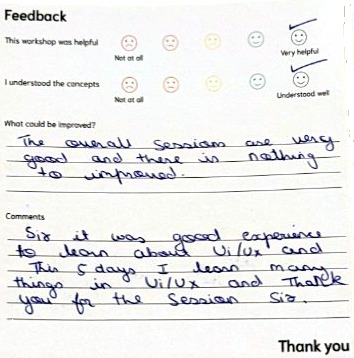
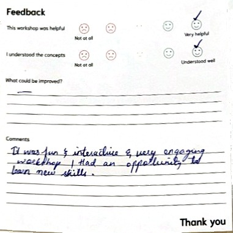
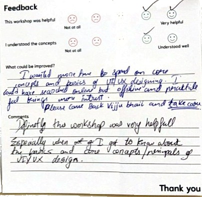
It was a very informative and fun session. I got to learn many things regarding UI/UX, which developed a new interest in me towards UI/UX.
Good, interesting, got a knowledge about design technique, got an idea how the design is done in industry. Great workshop.
Sir, it was a good experience to learn about UI/UX. In this 5 days I learn many things in UI/UX — and thank you for the session, Sir.
It was fun and interactive and a very engaging workshop. I had an opportunity to learn new skills.
Definitely the workshop was very helpful — especially when I got to know about the basics and core concepts and principles of UI/UX design.
No lecture slides for three days. Teams leave with something they built and tested.
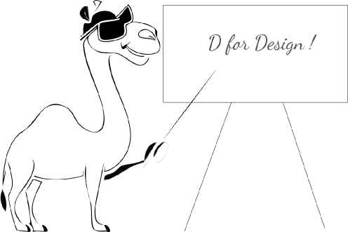
Most teams arrive solving the wrong one. Day one is spent finding out which one actually matters.
Day 1Participants run their own interviews — no role-play, no personas invented in the room.
Day 2Paper to prototype in a day, then straight in front of someone who's never seen it.
Day 3Work is critiqued properly. The certificate reflects what was actually done.
Day 4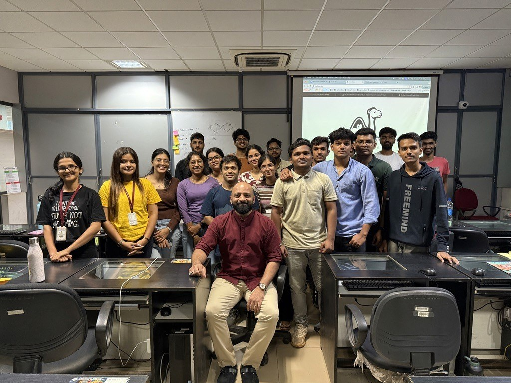
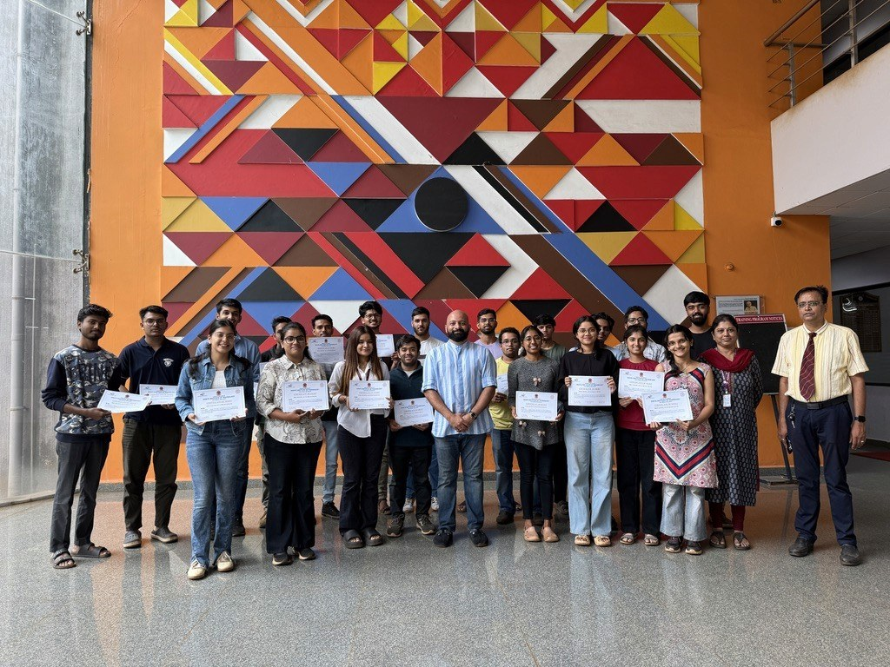
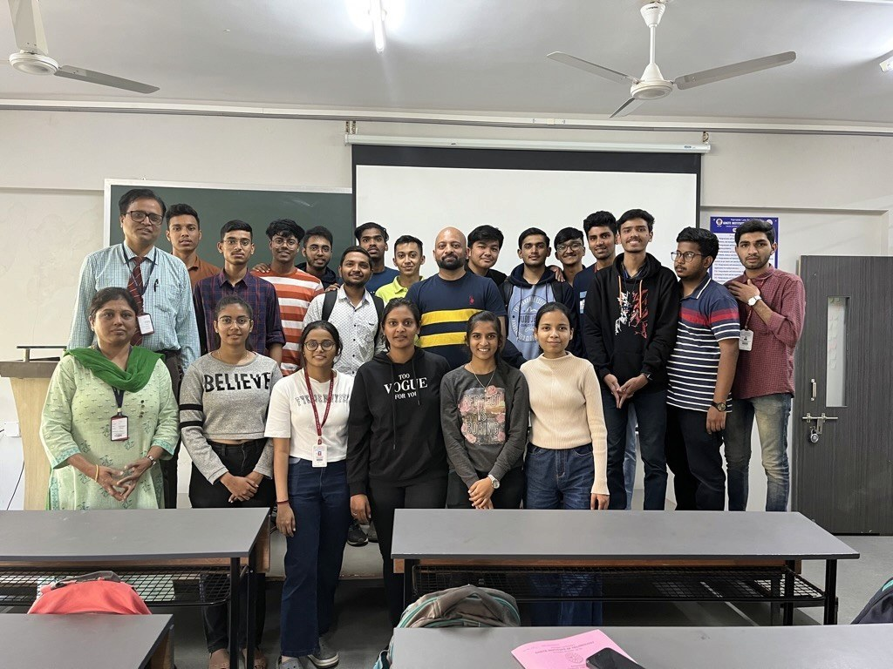
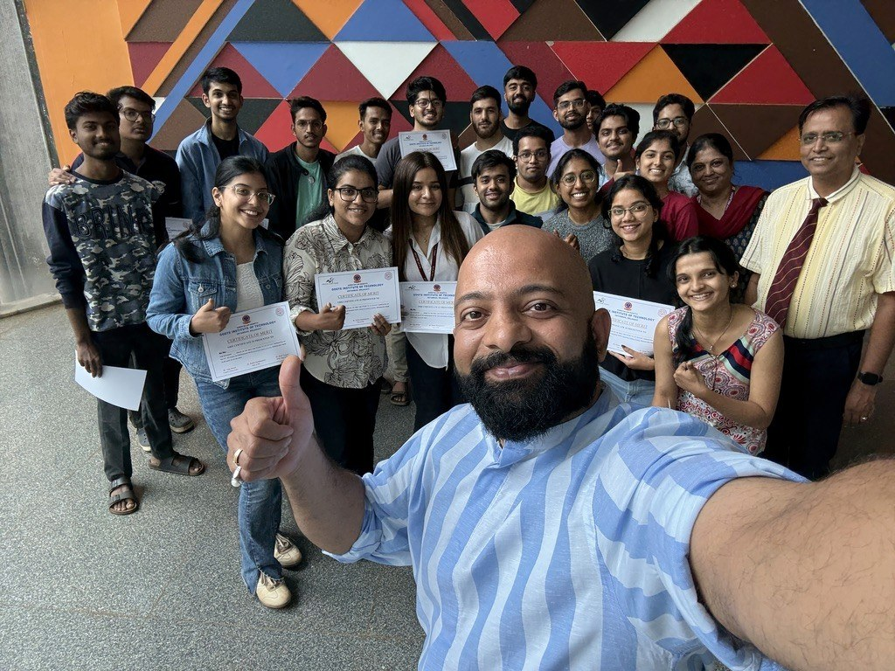
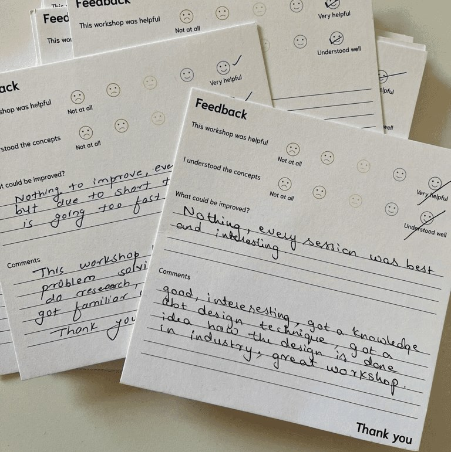
The thing a training vendor can't say.
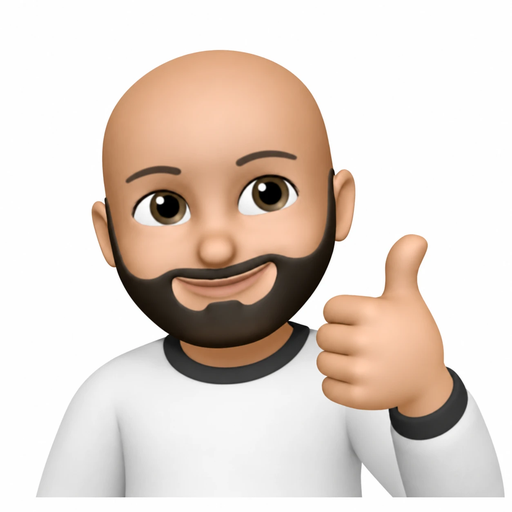
Nineteen years designing enterprise software — healthcare, capital markets and industrial systems — and the last decade building the teams that do it.
He has hired, coached and promoted designers across four organisations and mentored over 100 designers through structured capability programmes. The workshops are built from that same material — the levelling frameworks, critique practice and research methods he uses at work every week, not a syllabus assembled for teaching.
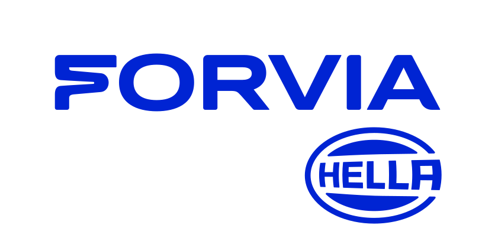
Attendance certificates are easy. These are earned against assessed work.
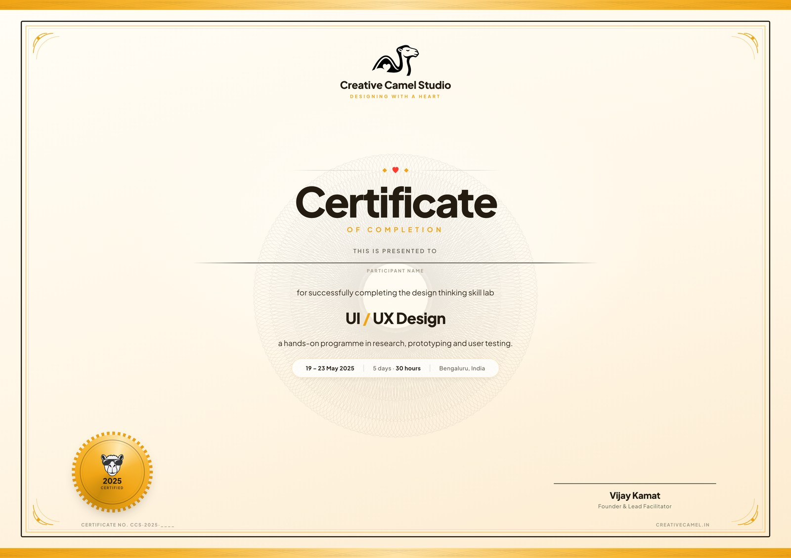
Every participant is assessed on the work they produced in the room — the prototype, the research, the critique — not on having turned up. The certificate names the programme, the hours and the dates, and carries a reference number.
Live client work is what keeps the teaching current — every method in the syllabus is one we're using this week.